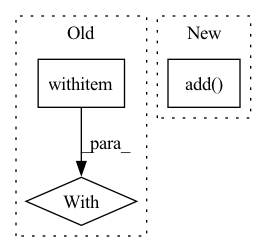

Pattern ID :12960
Before Change
"img_std": [0.229, 0.224, 0.225]}})
with f:
with TimeContext(f"QPS: indexing {num_docs}", logger=f.logger):
f.index_files(IMAGE_SRC, request_size=64, read_mode="rb", size=num_docs)
def query_restful():After Change
"img_mean": [0.485, 0.456, 0.406],
"img_std": [0.229, 0.224, 0.225]}})
f = f.add(uses=BigTransferEncoder)
f = f.add(uses={"jtype": "DocVectorIndexer",
"with": {"index_file_name": "image.json"}})
f = f.add(uses=KeyValueIndexer)
with f:
f.index(inputs=DocumentArray.from_files(IMAGE_SRC, size=num_docs),In pattern: SUPERPATTERN
Frequency: 3
Non-data size: 3
Instances Fragment ID: 43626169
Project Name: jina-ai/examples
Commit Name: 28f575d76dbe81664c54825de9b4d696e3be07ca
Time: 2021-05-26
Author: jakob.kruse@jina.ai
File Name: pokedex-with-bit/app.py
M Class Name: AnonimousClass
N Class Name: AnonimousClass
M Method Name: index(1)
N Method Name: index(1)
M Parent Class:
N Parent Class:
M File Name: pokedex-with-bit/app.py
N File Name: pokedex-with-bit/app.py
M Start Line: 37
M End Line: 40
N Start Line: 31
N End Line: 43
Before Change
_check_dill_version(pickle_module)
if _use_new_zipfile_serialization:
with _open_zipfile_writer(f) as opened_file:
_save(obj, opened_file, pickle_module, pickle_protocol)
return
with _open_file_like(f, "wb") as opened_file:After Change
f_pickle = f.name
fp = tarfile.open(f_pickle + "_", "w")
fp.add( f_pickle)
fp.close()
os.remove(f_pickle)
os.rename(f_pickle + "_", f_pickle)
Fragment ID: 43626168
Project Name: allanyiin/trident
Commit Name: bcdf7620a1a14d84309f2b5340cbe3cdd22f286e
Time: 2020-08-30
Author: allan@asiaminer.com.tw
File Name: trident/backend/tensorflow_serialization.py
M Class Name: AnonimousClass
N Class Name: AnonimousClass
M Method Name: save(5)
N Method Name: save(5)
M Parent Class:
N Parent Class:
M File Name: trident/backend/tensorflow_serialization.py
N File Name: trident/backend/tensorflow_serialization.py
M Start Line: 393
M End Line: 398
N Start Line: 393
N End Line: 412
Before Change
"img_mean": [0.485, 0.456, 0.406],
"img_std": [0.229, 0.224, 0.225]}})
f.use_rest_gateway()
with f:
f.block()
@click.command()After Change
def query_restful():
flow = Flow(workspace="workspace",
port_expose=os.environ.get("JINA_PORT", str(45678)))\
.add(uses={"jtype": "ImageCrafter",
"with": {"target_size": 96,
"img_mean": [0.485, 0.456, 0.406],
"img_std": [0.229, 0.224, 0.225]}})\
.add(uses=BigTransferEncoder)\
.add(uses={"jtype": "EmbeddingIndexer",
"with": {"index_file_name": "image.json"},
"metas": {"name": "vec_idx"}},
name="vec_idx")\
.add(uses={"jtype": "KeyValueIndexer",
"metas": {"name": "doc_idx"}},
name="kv_idx")\
.add(uses={"jtype": "MatchImageReader",
"with": {"target_size": 96,
"img_mean": [0.485, 0.456, 0.406],
"img_std": [0.229, 0.224, 0.225]}})
flow.use_rest_gateway()
with flow:
flow.block()
Fragment ID: 43626163
Project Name: jina-ai/examples
Commit Name: f7e0191f8792cfd23956c6eaddcee9c834fcbd6f
Time: 2021-05-28
Author: jakob.kruse@jina.ai
File Name: pokedex-with-bit/app.py
M Class Name: AnonimousClass
N Class Name: AnonimousClass
M Method Name: query_restful(0)
N Method Name: query_restful(0)
M Parent Class:
N Parent Class:
M File Name: pokedex-with-bit/app.py
N File Name: pokedex-with-bit/app.py
M Start Line: 55
M End Line: 77
N Start Line: 54
N End Line: 76